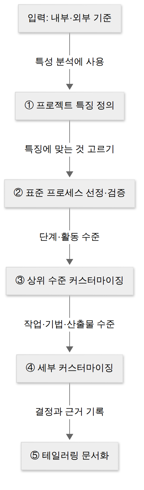

D020 · 테일러링과 개발 표준·프레임워크
A5 D018에서 생명주기 모델과 개발 방법론을 골랐고, D019에서 몇 명이 몇 달 드는지 숫자로 뽑았어요.
그런데 회사 표준 방법론 문서를 열어 보면 단계마다 산출물 양식이 마흔 개쯤 나와요. 3명이 두 달 하는 일에 그걸 다 채우면 문서가 코드보다 먼저 완성돼요.
그래서 오늘은 A5의 마지막 조각 세 개를 봐요.
- 방법론 테일러링 — 고른 방법론을 이 프로젝트에 맞게 고치기
- 소프트웨어 개발 표준(ISO/IEC 12207 · CMMI · SPICE) — 고친 프로세스가 괜찮은지 재는 잣대
- 소프트웨어 개발 프레임워크 — 코드의 공통 뼈대
- 테일러링이 왜 필요한지 설명하고, 고려 기준을 내부 기준(목표 환경·요구사항·프로젝트 규모·보유 기술)과 외부 기준(법적 제약사항·표준 품질 기준)으로 구별할 수 있다
- 테일러링 절차(프로젝트 특징 정의 → 표준 프로세스 선정·검증 → 상위 수준 커스터마이징 → 세부 커스터마이징 → 테일러링 문서화)의 순서를 설명할 수 있다
- 개발 표준인 ISO/IEC 12207(프로세스 3분류), CMMI(성숙도 5단계), SPICE(ISO/IEC 15504, 6단계)를 구별할 수 있다
- 개발 프레임워크의 정의(반제품)와 4특성(모듈화·재사용성·확장성·제어의 역흐름), 라이브러리와의 차이, 대표 종류를 구별할 수 있다
- 방법론 선정(D018) → 비용 산정(D019) → 테일러링 → 표준·프레임워크로 이어지는 관계를 설명할 수 있다
1. 큰 그림 — 고르고, 재고, 맞춰 고치고, 굴린다
D018의 질문은 “어떤 틀로 일할까”, D019의 질문은 “얼마나 들까”였어요. 오늘의 질문은 “고른 틀을 이 프로젝트에 맞게 어떻게 고칠까”예요.
폭포수·나선형·애자일 같은 표준은 많은 프로젝트에서 검증됐어요. 그런데 바로 그 이유로 특정 프로젝트 하나에는 과하거나 모자라요. 그 차이를 메우는 작업이 테일러링이에요.
표준은 내비게이션의 추천 경로 같아요. 대부분의 차에는 맞지만, 내 차가 화물 트럭이면 높이 제한 걸린 지하차도로 태연하게 안내하기도 하거든요.
테일러링으로 프로세스를 정했다고 실행이 저절로 되지는 않아요. 두 가지가 더 필요해요.
- 잣대 — 고친 프로세스가 국제적으로 봐도 쓸 만한가? → 소프트웨어 개발 표준(ISO/IEC 12207·CMMI·SPICE)
- 도구 — 매번 바닥부터 구조를 짜지 않게 해 주는 공통 뼈대 → 개발 프레임워크(Spring·전자정부 프레임워크)
아래 그림이 오늘 세 개념의 위치예요.
2. 테일러링이란 — 표준 방법론이라는 기성복을 수선하기
방법론을 골랐으니 이제 실제 프로젝트에 입혀 볼 차례예요.
회사나 기관의 표준 방법론은 수많은 프로젝트를 염두에 두고 만들어서, 단계·활동·작업·산출물을 넉넉하게 정의해 둬요. 대형 차세대 시스템에는 그게 다 필요할 수 있지만, 세 명이 두 달 만드는 사내 도구에는 대부분이 짐이에요.
반대로 금융·의료처럼 규제가 강한 분야에서는 표준에 없는 보안 검토나 인증 산출물을 더 넣어야 할 때도 있어요. 기성복은 누구에게나 대충 맞고, 누구에게도 딱 맞지 않아요.
테일러링(Tailoring)은 프로젝트의 상황과 특성에 맞도록, 이미 정의된 개발 방법론의 절차·기법·산출물 등을 수정·보완하는 작업이에요. 이름 그대로 재단사(tailor)가 옷을 몸에 맞게 고치는 일이에요.
- 소매 줄이기 = 불필요한 활동·산출물 제거
- 품 늘리기 = 필요한 활동 추가
- 단추 바꾸기 = 기법 교체
중요한 건 옷을 새로 짓는 게 아니라 이미 있는 표준을 바탕으로 고친다는 점이에요. 그래서 검증된 뼈대는 유지하면서 프로젝트 특성만 반영할 수 있어요.
얻는 것은 분명해요. 필요 없는 문서 작업이 줄어 생산성이 오르고, 꼭 필요한 활동이 빠지지 않아 품질이 지켜지고, 팀이 “왜 이 일을 하는지” 납득한 상태로 일하게 돼요. 대가도 있어요. 고치는 사람의 판단에 의존하므로, 근거 없이 활동을 빼면 나중에 감리나 품질 검토에서 구멍이 드러나요. 그래서 절차의 마지막에 문서화가 들어가 있어요(4장).
이름이 비슷한 개념과 헷갈리지 않게 한 문단 짚어요. 리팩토링은 외부 동작을 바꾸지 않고 코드의 내부 구조를 개선하는 것이고, 리엔지니어링은 기존 시스템을 분석해 새 기술이나 구조로 재구성하는 것이에요. 테일러링이 고치는 대상은 코드도 시스템도 아니라 방법론(일하는 절차)이에요. 선지에 “방법론의 절차·산출물을 프로젝트에 맞게 조정”이 보이면 테일러링, “코드 구조 개선”이면 리팩토링이에요.
3. 테일러링 기준 — 안에서 정해지는 것, 밖에서 주어지는 것
무엇을 보고 고칠지 정해야 수선이 엉뚱한 데로 가지 않아요. 시험은 고려 기준을 내부 기준과 외부 기준 두 묶음으로 나눠요.
가르는 질문은 하나예요. “그 조건이 프로젝트 안의 사정으로 정해지나, 프로젝트 밖에서 주어지나?”
내부 기준은 팀 회의로 바꿀 수 있는 것, 외부 기준은 회의를 백 번 해도 안 바뀌는 것이에요. 금융 감독 규정은 회의록에 “조정 요망”이라고 적어도 꿈쩍하지 않거든요.
내부 기준은 네 가지예요.
- 목표 환경 — 시스템이 돌아갈 환경. 웹이냐 임베디드냐, 클라우드냐 사내 서버냐에 따라 필요한 설계·시험 활동이 달라져요.
- 요구사항 — 중점 요구의 성격. 성능이 핵심이면 성능 시험을 강화하고, 화면이 핵심이면 프로토타입 활동을 늘려요.
- 프로젝트 규모 — 비용·인력·기간. D019에서 산정한 숫자가 여기 쓰여요. 작을수록 산출물을 합치거나 줄여요.
- 보유 기술 — 팀의 기술·경험. 처음 쓰는 기술이면 교육·기술 검증을 넣고, 익숙하면 줄여요.
외부 기준은 두 가지예요. 법적 제약사항은 법률·규제가 요구하는 것으로, 흔히 IT 컴플라이언스라고 불러요. 개인정보를 다루면 개인정보 영향평가나 보안 검토 산출물을 빼고 싶어도 뺄 수 없어요. 표준 품질 기준은 금융·제조·공공 같은 분야별로 정해진 품질 기준이에요. 그 분야에서 인정받으려면 해당 기준이 요구하는 활동을 프로세스에 넣어야 해요. 한 장 요약은 아래와 같아요.
| 구분 | 기준 | 이런 차이가 있으면 고친다 |
|---|---|---|
| 내부 | 목표 환경 | 웹·임베디드·클라우드 등 운영 환경이 다르다 |
| 요구사항 | 성능·화면·보안 등 중점 요구가 다르다 | |
| 프로젝트 규모 | 비용·인력·기간이 크거나 작다 | |
| 보유 기술 | 팀의 기술·경험 수준이 다르다 | |
| 외부 | 법적 제약사항 | 법률·규제(IT 컴플라이언스)가 요구하는 활동이 있다 |
| 표준 품질 기준 | 금융·공공 등 분야별 품질 기준이 있다 |
4. 테일러링 절차 5단계 — 큰 옷에서 시작해 단추까지
기준을 알았으니 이제 순서예요. 테일러링 절차는 자료마다 표현이 조금씩 다르지만, 수험서와 대부분의 자료가 쓰는 표기는 다섯 단계예요. 흐름은 “파악하고 → 고르고 → 크게 고치고 → 잘게 고치고 → 기록한다”예요.
- 프로젝트 특징 정의 — 내부·외부 기준으로 이 프로젝트가 어떤 프로젝트인지 파악해요(규모, 운영 환경, 중점 요구, 팀 역량, 규제).
- 표준 프로세스 선정 및 검증 — 조직의 표준 프로세스 중 맞는 것을 고르고 정말 맞는지 확인해요. D018에서 고른 방법론이 출발점이에요.
- 상위 수준 커스터마이징 — 단계·활동처럼 큰 덩어리를 조정해요. 예: “분석과 설계 단계를 합친다”, “보안 점검 활동을 넣는다”.
- 세부 커스터마이징 — 작업·기법·산출물 수준으로 세밀하게 조정해요. 예: “요구사항 정의서와 유스케이스 명세서를 한 문서로”, “설계 검토는 워크스루로”.
- 테일러링 문서화 — 무엇을 왜 넣고 뺐는지 결과와 근거를 기록해요.
5단계를 건너뛰면 반년 뒤 감리에서 “이 산출물은 왜 없나요?”라는 질문에 아무도 대답하지 못해요. 뺀 것도 기록해야 뺀 게 돼요.

순서를 기억하는 요령은 옷 수선과 같아요. 먼저 몸 치수를 재고(특징 정의), 맞는 기성복을 고르고(선정·검증), 품과 기장 같은 큰 데를 고친 다음(상위), 단추와 주머니 같은 작은 데를 고치고(세부), 수선 내역을 영수증에 적어요(문서화). 상위가 세부보다 먼저라는 것, 문서화가 맨 끝이라는 것이 선지 순서 문제에서 갈리는 지점이에요.
5. 개발 표준 — 고친 프로세스를 재는 국제 잣대
테일러링은 결국 사람이 판단해서 프로세스를 고치는 일이라, “이렇게 고친 프로세스가 괜찮은가”를 객관적으로 볼 잣대가 필요해요.
발주자 입장에서도 마찬가지예요. 처음 일을 맡기는 개발 회사가 “저희 프로세스 튼튼해요”라고 말하는 것만으로는 믿기 어렵죠. 그래서 개발 과정 자체의 품질을 판단하는 국제 표준이 생겼어요.
시험에서 소프트웨어 개발 표준이라고 하면 이 세 가지예요 — ISO/IEC 12207, CMMI, SPICE.
ISO/IEC 12207 — 소프트웨어 생명주기 프로세스의 표준 목록
ISO/IEC 12207은 ISO(국제표준화기구)와 IEC(국제전기기술위원회)가 만든 소프트웨어 생명주기 프로세스 표준이에요.
소프트웨어를 사고, 만들고, 운영하고, 고치는 동안 어떤 프로세스가 있어야 하는지 목록을 제공해요. 등급을 매기는 표준이 아니라 기준 틀이라서, 조직이 자기 표준 방법론을 만들 때 참고하는 지도 역할을 해요.
프로세스를 세 묶음으로 나누고, 시험은 특정 프로세스가 어느 묶음에 속하는지 물어요.
① 기본 생명주기 프로세스 — 소프트웨어를 직접 사고, 만들고, 쓰는 일
- 획득(발주자가 사는 일) · 공급(공급자가 납품하는 일) · 개발 · 운영 · 유지보수
② 지원 생명주기 프로세스 — 기본 프로세스를 옆에서 돕는 일
- 문서화 · 형상 관리 · 품질 보증 · 검증 · 확인 · 활동 검토(합동 검토) · 감사 · 문제 해결
③ 조직 생명주기 프로세스 — 조직 차원에서 프로세스를 관리하고 키우는 일
- 관리 · 기반 구조 · 훈련(교육) · 개선
형상 관리를 “개발에 늘 붙어 다니니 기본이겠지” 하고 고르는 실수가 흔해요. 형상 관리는 지원 프로세스예요.
| 분류 | 포함 프로세스 |
|---|---|
| 기본 생명주기 | 획득, 공급, 개발, 운영, 유지보수 — 직접 사고·만들고·쓰는 일 |
| 지원 생명주기 | 문서화, 형상 관리, 품질 보증, 검증, 확인, 활동 검토, 감사, 문제 해결 — 옆에서 돕는 일 |
| 조직 생명주기 | 관리, 기반 구조, 훈련, 개선 — 조직 차원에서 키우는 일 |
CMMI — 조직의 프로세스 성숙도 5단계
CMMI(Capability Maturity Model Integration, 능력 성숙도 통합 모델)는 미국 카네기멜런대 SEI(소프트웨어공학연구소)가 만든 모델이에요. 개발 조직의 업무 능력과 프로세스 성숙도를 평가해요.
ISO/IEC 12207이 “어떤 프로세스가 있어야 하나”의 목록이라면, CMMI는 “그 프로세스를 얼마나 성숙하게 운영하나”를 단계로 매겨요. 공공·국방 사업이 일정 등급 이상을 요구하기도 해서, 개발 회사가 CMMI 등급을 따는 이유가 되기도 해요.
성숙도는 다섯 단계예요.
- 초기(Initial) — 정해진 절차가 없어 결과가 개인 역량에 좌우돼요.
- 관리(Managed) — 프로젝트 단위로 일정·비용·요구사항을 관리해요.
- 정의(Defined) — 조직 표준 프로세스가 있고, 프로젝트가 그걸 테일러링해서 써요. 오늘 배운 테일러링이 바로 이 단계의 모습이에요.
- 정량적 관리(Quantitatively Managed) — 프로세스를 수치로 측정하고 통제해요.
- 최적화(Optimizing) — 측정 결과로 프로세스를 지속적으로 개선해요.
쉽게 말해 1단계는 “그 선배가 있으면 돌아가는 팀”, 5단계는 “그 선배가 퇴사해도 돌아가고, 매달 조금씩 나아지는 팀”이에요.
SPICE — ISO/IEC 15504, 프로세스 능력 6단계
SPICE(Software Process Improvement and Capability dEtermination)는 소프트웨어 프로세스를 평가·개선하기 위한 국제 표준이고, 공식 번호는 ISO/IEC 15504예요. CMMI가 미국 연구소의 모델이라면, SPICE는 같은 목적을 ISO 국제 표준으로 정리한 거예요.
둘 다 단계로 매기지만, SPICE는 0단계부터 시작해 6단계라는 점이 시험 함정이에요.
- 0 불완전(Incomplete) — 프로세스가 구현되지 않았거나 목적을 달성하지 못함
- 1 수행(Performed) — 목적은 달성함
- 2 관리(Managed) — 정해진 자원 안에서 계획·관리함
- 3 확립(Established) — 표준 프로세스로 수행함
- 4 예측(Predictable) — 정량적으로 측정·통제해 결과를 예측함
- 5 최적화(Optimizing) — 지속적으로 개선함
한 장 요약은 아래와 같아요.
| 단계 | CMMI (1~5, 5단계) | SPICE (0~5, 6단계) |
|---|---|---|
| 0 | 없음 | 불완전 (Incomplete) |
| 1 | 초기 (Initial) | 수행 (Performed) |
| 2 | 관리 (Managed) | 관리 (Managed) |
| 3 | 정의 (Defined) | 확립 (Established) |
| 4 | 정량적 관리 (Quantitatively Managed) | 예측 (Predictable) |
| 5 | 최적화 (Optimizing) | 최적화 (Optimizing) |
세 표준과 회사 안의 규칙은 이렇게 이어져요.
- 조직이 ISO/IEC 12207의 프로세스 목록을 참고해 자기 표준 방법론을 만들어요.
- 그 성숙도를 CMMI나 SPICE로 평가받아요.
- 표준 방법론에서 코딩 규칙·산출물 양식·리뷰 절차 같은 조직 내부 개발 표준이 나와요.
현업에서 “우리 팀 개발 표준”이라고 부르는 코딩 컨벤션 문서가 사실은 이 국제 표준들의 손자뻘인 셈이에요.
6. 개발 프레임워크 — 반쯤 지어 둔 집에 입주하기
프로세스와 그 잣대를 봤으니 이제 코드 쪽이에요. 프로젝트마다 로그인·트랜잭션·예외 처리·DB 연결 같은 공통 구조를 처음부터 다시 짜면, 시간도 들고 품질도 사람마다 들쭉날쭉해요.
이걸 풀려고 나온 것이 소프트웨어 개발 프레임워크예요. 공통 구성 요소와 아키텍처를 일반화해서 여러 기능을 제공하는 반제품 형태의 소프트웨어 시스템이에요.
“반제품”이 핵심이에요. 뼈대와 배관은 이미 깔려 있고, 개발자는 업무 로직이라는 방을 채워 넣어요.
라이브러리와 무엇이 다른가 — 누가 누구를 부르나
현업에서는 라이브러리와 프레임워크를 섞어 부르지만, 시험이 보는 차이는 제어의 방향이에요.
- 라이브러리 = 내가 꺼내 쓰는 공구. 내 코드가 흐름을 쥐고 라이브러리 함수를 호출해요.
- 프레임워크 = 내가 출근하는 사무실. 프레임워크가 흐름을 쥐고 내가 끼워 넣은 코드를 정해진 시점에 호출해요.
프레임워크의 4특성
시험은 프레임워크의 특성 네 가지를 설명과 짝지어 물어요.
- 모듈화(Modularity) — 캡슐화로 기능을 모듈 단위로 나눠요. 한 모듈을 고쳐도 변경 영향이 덜 퍼져 유지보수성이 좋아져요.
- 재사용성(Reusability) — 반복되는 기능(트랜잭션·로깅 등)을 재사용 가능한 모듈로 제공해 생산성을 높여요.
- 확장성(Extensibility) — 다형성으로 인터페이스를 확장해요. 프레임워크를 고치지 않고 구현·상속으로 우리 동작을 끼워 넣어요.
- 제어의 역흐름(IoC) — 객체의 생성·호출·생명주기 제어를 개발자 대신 프레임워크가 맡아요. 위 그림의 오른쪽이 이 모습이에요.
IoC를 할리우드 원칙이라고도 불러요. “Don't call us, we'll call you(연락하지 마세요, 저희가 연락드릴게요).” 내 컨트롤러는 오디션 본 배우처럼, Spring이 HTTP 요청을 들고 불러 줄 때까지 기다려요.
Spring의 의존성 주입(DI)이 IoC를 구현하는 대표 방법이에요. 내가 new로 객체를 만들지 않고, 컨테이너가 만들어서 넣어 줘요. 한 장 요약은 아래와 같아요.
대표 종류와 기대 효과
시험에 나오는 종류는 세 가지예요.
- 스프링(Spring) — 자바 플랫폼용 오픈 소스 경량 프레임워크. DI·AOP로 POJO 중심 개발을 돕고, 전자정부 프레임워크의 기반 기술이에요.
- 전자정부 프레임워크 — 국내 공공 정보화 사업의 표준 프레임워크. Spring 기반에 공통 컴포넌트를 더해 표준화·품질·재사용성을 높여요. 사업마다 구조가 제각각이던 문제를 줄이려고 만들었어요.
- 닷넷(.NET) — Microsoft의 Windows 프로그램 개발·실행 환경. CLR(Common Language Runtime)이라는 가상 머신 위에서 실행해요.
| 종류 | 특징 |
|---|---|
| 스프링(Spring) | 자바 오픈 소스 경량 프레임워크, DI·AOP, 전자정부 프레임워크의 기반 |
| 전자정부 프레임워크 | 국내 공공 정보화 사업 표준, Spring 기반 + 공통 컴포넌트 |
| 닷넷(.NET) | Microsoft, Windows 프로그램 개발·실행, CLR 가상 머신 |
프레임워크를 쓰면 기대할 수 있는 효과는 품질 보증(검증된 구조 위에서 개발), 개발 용이성(공통 기능을 가져다 씀), 변경 용이성(모듈화로 영향 범위가 좁음), 생산성 향상과 비용 절감, 그리고 시스템 복잡도 감소예요. 마지막 항목이 함정 포인트예요. 처음 배울 때는 설정이 많아 복잡해 보이지만, 시험이 말하는 효과는 공통 구조를 표준화해 전체 시스템의 복잡도를 줄인다는 것이에요.
7. 한 장 비교 — 세 개념은 무엇을 맞추나
오늘 세 개념은 모두 “맞춘다”는 같은 동사를 써서 섞이기 쉬워요. 시험장에서는 무엇을 무엇에 맞추느냐, 즉 목적어만 찾으면 정체가 드러나요. 국어 시간의 목적어 찾기가 뜻밖의 곳에서 본전을 뽑는 셈이에요.
- 테일러링 = 방법론을 프로젝트에
- 개발 표준 = 조직의 프로세스를 국제 기준에
- 프레임워크 = 코드 구조를 공통 뼈대에
한 장 요약은 아래와 같아요.
| 개념 | 무엇을 무엇에 맞추나 | 시험 키워드 |
|---|---|---|
| 테일러링 | 표준 방법론의 절차·산출물을 프로젝트 특성에 | 내부 4·외부 2 기준, 5단계 절차 |
| 개발 표준 | 조직의 개발 프로세스를 국제 품질 기준에 | 12207 3분류, CMMI 5단계, SPICE 15504 6단계 |
| 개발 프레임워크 | 코드 구조를 재사용 가능한 공통 뼈대에 | 반제품, 4특성, IoC, Spring·전자정부·.NET |
이것으로 A5 「소프트웨어개발 방법론 활용」이 한 바퀴 돌았어요.
- D018 — 생명주기와 방법론을 고르고
- D019 — 비용을 재고
- D020(오늘) — 프로젝트에 맞게 고쳐서 표준과 프레임워크 위에서 굴린다
내일 D021에서는 이 틀 안에서 실제로 단위 모듈을 구현·테스트하고, 그때 쓰는 IDE·협업·형상 관리 도구를 봐요. 오늘 ISO/IEC 12207에서 “지원 프로세스”로 나온 형상 관리가 내일 도구로 다시 등장해요.
8. 시험 포인트·암기 단서
오늘 내용은 “어느 쪽 기준인가”, “몇 번째 단계인가”, “어떤 특성의 설명인가”를 고르는 문제로 나와요. 위에서 설명한 내용을 짧은 단서로 묶어 둘게요.
9. 오답 복습 — 유효성, 결합도 순서, UI 표준
오늘은 세 오답을 다시 봐요. 테일러링 기준을 내부·외부로 가를 때 “안에서 정해지나, 밖에서 주어지나”라는 질문 하나로 판단했듯, 아래 세 문제도 판별 질문 하나만 갖고 있으면 흔들리지 않아요. 세 문제 모두 이미 몇 번 마주친 구면이니, 이번에는 처음 보는 척하지 말고 먼저 알은체해 줘요.
D009-7 · 유효성과 유연성. UI 설계 원칙 네 가지는 각자 다른 질문에 답해요.
- 유효성 — 목표를 정확하고 완전하게 달성할 수 있나?
- 유연성 — 다양한 요구·조작 방식을 수용하고 실수를 방지·복구하나?
- 직관성 — 누구나 쉽게 이해하고 쓰나?
- 학습성 — 누구나 쉽게 배우고 익히나?
설명에 “정확·완전·달성”이 보이면 유효성이에요(D007·D009 다시 보기).
D016-6 · 결합도 순서와 방향. 결합도는 약할수록 좋아요. 약 → 강은 “자스제외공내”(자료 → 스탬프 → 제어 → 외부 → 공통 → 내용), 강 → 약은 그 역순 “내공외제스자”예요.
이번에는 순서 전체가 아니라 몇 번째를 물어요. 두 질문을 차례로 던지세요.
- 문제의 방향이 강 → 약인가, 약 → 강인가?
- 그 방향의 두문자어에서 몇 번째 글자인가?
방향을 반대로 세면 바로 옆 칸의 답이 나오도록 선지가 짜여 있어요. 세기 전에 방향 단어에 먼저 동그라미를 치세요(D012 다시 보기).
D007-1 · UI 표준과 UI 지침. 오늘 배운 “국제 표준 → 조직 내부 규칙” 관계가 여기에도 그대로 있어요.
- UI 표준 — 전체 시스템에 공통으로 적용하는 화면 구성·화면 이동 규약
- UI 지침 — 그 표준을 바탕으로 개발 과정에서 지켜야 할 세부 조건(UI 요구사항·구현 제약 등)
와이어프레임·스토리보드는 화면 설계 산출물이라 둘 다 아니에요(D007 다시 보기).
확인 문제
- 소프트웨어 개발 방법론 테일러링을 할 때 고려하는 기준 중 외부적 기준에 해당하는 것은?
- 소프트웨어 개발 프레임워크의 특성 중, 개발자가 직접 관리하던 객체의 생성과 호출 흐름을 프레임워크가 넘겨받아 제어하는 것은?
- (오답 재확인) 사용자가 UI를 통해 원하는 목표를 정확하고 완전하게 달성할 수 있도록 설계해야 한다는 UI 설계 원칙은?
- (오답 재확인) 결합도를 강한 것부터 약한 것 순서로 나열했을 때 세 번째에 오는 것은?
- (오답 재확인) 전체 시스템 개발 과정에서 공통으로 적용해야 하는 화면 구성, 화면 이동 등의 UI 규약은?
고른 뒤 답안 복사 → 디스코드 공부 채널에 붙여넣기 하면 돼요.
답장: 정처기 D020: 1)번호 2)번호 3)번호 4)번호 5)번호